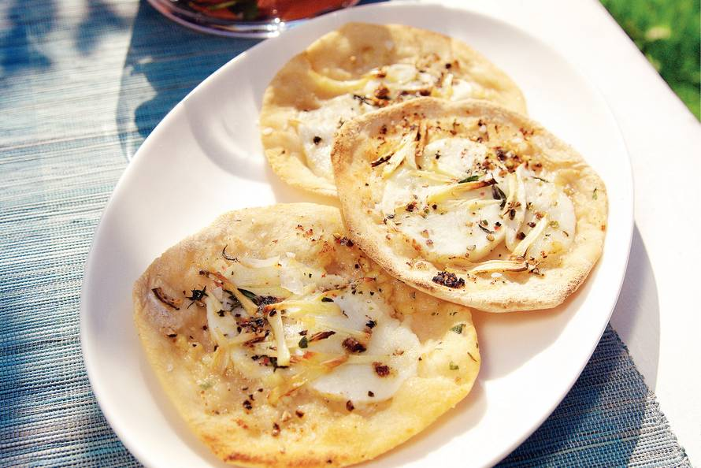

Voorgerecht: knoflookpizza
De knoflookpizza is het perfecte voorgerecht. Niet te veel of te groot.
Ingrediënten
- 100 g kant-en-klaar broodmix
- 2 eetlepels traditionele olijfolie
- 125 g mozzarella
- 2 eetlepels tarwebloem
- 4 tenen knoflook
- 1 theelepel verse tijm
Bereidingswijze
- Verwarm de oven voor op 225 ºC. Kneed de broodmix met 1 el olie tot een soepel deeg en laat het 15 minuten rusten. Verdeel het deeg in vier porties. Vorm er balletjes van en bestrooi het werkvlak dun met bloem.
- Snijd de mozzarella in dunne plakken. Bebloem ook de deegroller en rol de balletjes tot dunne pizzabodems. Bestrijk ze licht met olie en verdeel de mozzarella erover.
- Snijd de knoflook fijn. Leg de knoflook en de tijm op de pizza's en bestrooi met (zee)zout en (versgemalen) peper. Bak de pizza's in de oven in 8-10 minuten goudbruin.
